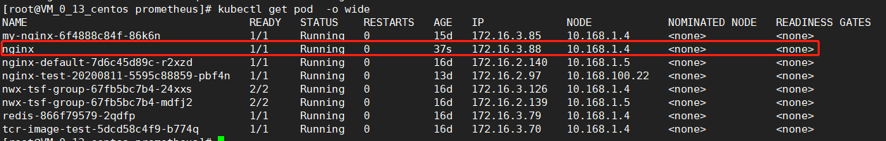
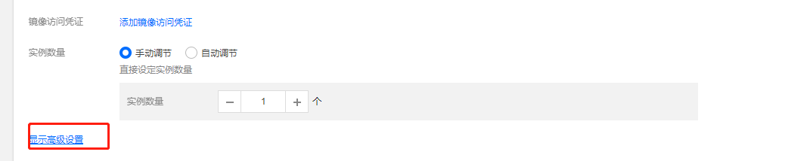
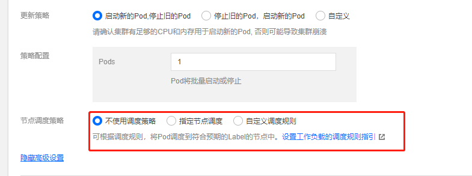
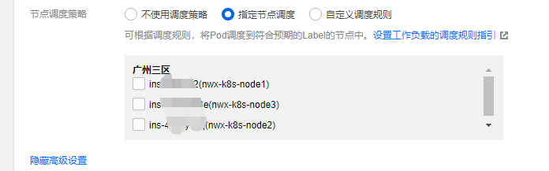
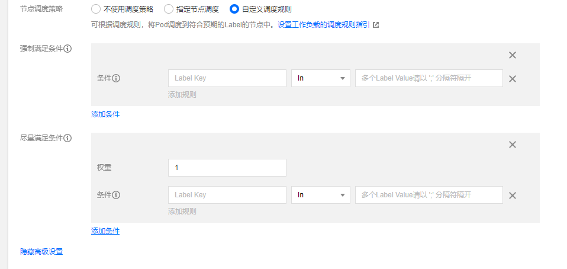
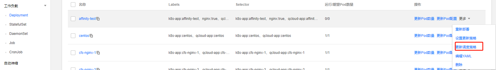
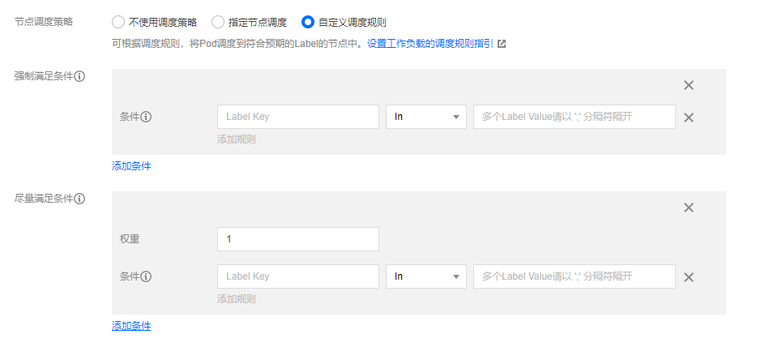

我们在日常使用k8s的过程中总会存在一些特殊的调度情景：
- 让master节点上不部署业务的pod
- 让mysql调度到高IO的节点上
- 让coredns的服务均匀的散布在每个节点
- 让内服服务调度在一个节点上，减少访问延迟
这边肯定会有其他场景也会有对pod的调度有特殊要求，这边只是列举了其中几个情况，对于上述遇到的情况我们需要怎么处理，其实k8s给我们提供了丰富的调度策略来满足我们的需求。下面我们来一一说下这些调度策略。
nodeSelector
你可以约束一个Pod只能在特定的Node(s)上运行，或者优先运行在特定的节点上。有几种方法可以实现这点，推荐的方法都是用标签选择器来进行选择。通常这样的约束不是必须的，因为调度器将自动进行合理的放置（比如，将 pod 分散到节点上，而不是将 pod 放置在可用资源不足的节点上等等），但在某些情况下，你可以需要更多控制 pod 停靠的节点，例如，确保 pod 最终落在连接了 SSD 的机器上，或者将来自两个不同的服务且有大量通信的 pod 放置在同一个可用区
nodeSelector是节点选择约束的最简单推荐形式。nodeSelector是 PodSpec 的一个字段。 它包含键值对的映射。为了使 pod 可以在某个节点上运行，该节点的标签中必须包含这里的每个键值对（它也可以具有其他标签）。最常见的用法的是一对键值对。
添加标签到节点
执行 kubectl get nodes 命令获取集群的节点名称。 选择一个你要增加标签的节点，然后执行命令将标签添加到你所选择的节点上。
1 | kubectl label nodes <node-name> <label-key>=<label-value> |
例如，如果你的节点名称为 ‘kubernetes-foo-node-1.c.a-robinson.internal’ 并且想要的标签是 ‘disktype=ssd’，则可以执行命令。
1 | kubectl label nodes kubernetes-foo-node-1.c.a-robinson.internal disktype=ssd |
你可以通过重新运行 kubectl get nodes —show-labels，查看节点当前具有了所指定的标签来验证它是否有效。 你也可以使用 命令查看指定节点的标签完整列表
1 | [root@VM_0_13_centos prometheus]# kubectl get nodes --show-labels | grep ssd |
添加 nodeSelector 字段到 Pod 配置中
选择任何一个你想运行的 Pod 的配置文件，并且在其中添加一个 nodeSelector 部分。 例如，如果下面是我的 pod 配置
1 | apiVersion: v1 |
执行上述yaml可以发现pod已经到到对应的ssd节点了

k8s默认给节点打的标签
1 | kubernetes.io/hostname |
节点的亲和性和反亲和性
nodeSelector 提供了一种非常简单的方法来将 pod 约束到具有特定标签的节点上。亲和/反亲和功能极大地扩展了你可以表达约束的类型。关键的增强点是
- 语言更具表现力（不仅仅是“完全匹配的 AND”）
- 你可以发现规则是“软”/“偏好”，而不是硬性要求，因此，如果调度器无法满足该要求，仍然调度该 pod
- 你可以使用节点上（或其他拓扑域中）的 pod 的标签来约束，而不是使用节点本身的标签，来允许哪些 pod 可以或者不可以被放置在一起。
亲和功能包含两种类型的亲和，即“节点亲和”和“pod 间亲和/反亲和”。节点亲和就像现有的 nodeSelector（但具有上面列出的前两个好处），然而 pod 间亲和/反亲和约束 pod 标签而不是节点标签（在上面列出的第三项中描述，除了具有上面列出的第一和第二属性）
亲和性调度可以分成软策略和硬策略两种方式:
- 软策略就是如果你没有满足调度要求的节点的话，pod 就会忽略这条规则，继续完成调度过程，说白了就是满足条件最好了，没有的话也无所谓了的策略
- 硬策略就比较强硬了，如果没有满足条件的节点的话，就不断重试直到满足条件为止，简单说就是你必须满足我的要求，不然我就不干的策略。
对于亲和性和反亲和性都有这两种规则可以设置： preferredDuringSchedulingIgnoredDuringExecution和requiredDuringSchedulingIgnoredDuringExecution，前面的就是软策略，后面的就是硬策略。
目前有两种类型的节点亲和，分别为 requiredDuringSchedulingIgnoredDuringExecution 和 preferredDuringSchedulingIgnoredDuringExecution。你可以视它们为“硬”和“软”，意思是，前者指定了将 pod 调度到一个节点上必须满足的规则（就像 nodeSelector 但使用更具表现力的语法），后者指定调度器将尝试执行但不能保证的偏好。名称的“IgnoredDuringExecution”部分意味着，类似于 nodeSelector 的工作原理，如果节点的标签在运行时发生变更，从而不再满足 pod 上的亲和规则，那么 pod 将仍然继续在该节点上运行。
1 | apiVersion: v1 |
此节点亲和规则表示，pod 只能放置在具有标签键为 kubernetes.io/e2e-az-name 且 标签值为 e2e-az1 或 e2e-az2 的节点上。另外，在满足这些标准的节点中，具有标签键为 another-node-label-key 且标签值为 another-node-label-value 的节点应该优先使用。这里的匹配逻辑是 label 的值在某个列表中，现在Kubernetes提供的操作符有下面的几种：
- In：label 的值在某个列表中
- NotIn：label 的值不在某个列表中
- Gt：label 的值大于某个值
- Lt：label 的值小于某个值
- Exists：某个 label 存在
- DoesNotExist：某个 label 不存在
如果nodeSelectorTerms下面有多个选项的话，满足任何一个条件就可以了；如果matchExpressions有多个选项的话，则必须同时满足这些条件才能正常调度 POD。
preferredDuringSchedulingIgnoredDuringExecution 中的 weight 字段值的范围是 1-100。对于每个符合所有调度要求（资源请求，RequiredDuringScheduling 亲和表达式等）的节点，调度器将遍历该字段的元素来计算总和，并且如果节点匹配对应的MatchExpressions，则添加“权重”到总和。然后将这个评分与该节点的其他优先级函数的评分进行组合。总分最高的节点是最优选
pod的亲和性和反亲和性
pod 间亲和与反亲和使你可以基于已经在节点上运行的 pod 的标签来约束 pod 可以调度到的节点，而不是基于节点上的标签。规则的格式为“如果 X 节点上已经运行了一个或多个 满足规则 Y 的pod，则这个 pod 应该（或者在非亲和的情况下不应该）运行在 X 节点”。Y 表示一个具有可选的关联命令空间列表的 LabelSelector；与节点不同，因为 pod 是命名空间限定的（因此 pod 上的标签也是命名空间限定的），因此作用于 pod 标签的标签选择器必须指定选择器应用在哪个命名空间。从概念上讲，X 是一个拓扑域，如节点，机架，云供应商地区，云供应商区域等。你可以使用 topologyKey 来表示它，topologyKey 是节点标签的键以便系统用来表示这样的拓扑域。这里拓扑域可以从默认的标签中选择
pod 亲和性主要解决 pod 可以和哪些 pod 部署在同一个拓扑域中的问题（其中拓扑域用主机标签实现，可以是单个主机，也可以是多个主机组成的 cluster、zone 等等），而 pod 反亲和性主要是解决 pod 不能和哪些 pod 部署在同一个拓扑域中的问题，它们都是处理的 pod 与 pod 之间的关系，比如一个 pod 在一个节点上了，那么我这个也得在这个节点，或者你这个 pod 在节点上了，那么我就不想和你待在同一个节点上。
由于我们这里只有一个集群，并没有区域或者机房的概念，所以我们这里直接使用主机名来作为拓扑域，把 pod 创建在同一个主机上面。
1 | [root@VM_0_13_centos prometheus]# kubectl get nodes --show-labels |
与节点亲和一样，当前有两种类型的 pod 亲和与反亲和，即 requiredDuringSchedulingIgnoredDuringExecution 和 preferredDuringSchedulingIgnoredDuringExecution，分表表示“硬性”与“软性”要求。请参阅前面节点亲和部分中的描述。requiredDuringSchedulingIgnoredDuringExecution 亲和的一个示例是“将服务 A 和服务 B 的 pod 放置在同一区域，因为它们之间进行大量交流”，而 preferredDuringSchedulingIgnoredDuringExecution 反亲和的示例将是“将此服务的 pod 跨区域分布”（硬性要求是说不通的，因为你可能拥有的 pod 数多于区域数）。
Pod 间亲和通过 PodSpec 中 affinity 字段下的 podAffinity 字段进行指定。而 pod 间反亲和通过 PodSpec 中 affinity 字段下的 podAntiAffinity 字段进行指定
1 | apiVersion: v1 |
podAffinity
下面我来实践下pod的亲和性，下面这个例子中的 pod 需要调度到某个指定的主机上，至少有一个节点上运行了这样的 pod：这个 pod 有一个app=redis的 label。
1 | [root@VM_0_13_centos ~]# kubectl get pod --show-labels -o wide | grep app=redis |
测试pod亲和性的yaml文件
1 | apiVersion: apps/v1beta1 |
我们看到这个 pod 运行在了10.168.1.4的节点上面，所以按照上面的亲和性来说，上面我们部署的3个 pod 副本也应该运行在 10.168.1.4节点上：
1 | [root@VM_0_13_centos ~]# kubectl get pod -o wide | grep affinity |
下面我们把redis的标签改下，然后重建下deloyment看下，看下会发生什么情况
1 | [root@VM_0_13_centos ~]# kubectl get pod --show-labels -o wide | grep app=redis |
1 | [root@VM_0_13_centos ~]# kubectl get pod |
我们可以看到处于Pending状态了，这是因为现在没有一个节点上面拥有busybox-pod这个 label 的 pod，而上面我们的调度使用的是硬策略，所以就没办法进行调度了
我们这个地方使用的是kubernetes.io/hostname这个拓扑域，意思就是我们当前调度的 pod 要和目标的 pod 处于同一个主机上面，因为要处于同一个拓扑域下面，为了说明这个问题，我们把拓扑域改成beta.kubernetes.io/os，同样的我们当前调度的 pod 要和目标的 pod 处于同一个拓扑域中，目标的 pod 是不是拥有beta.kubernetes.io/os=linux的标签，而我们这里3个节点都有这样的标签，这也就意味着我们3个节点都在同一个拓扑域中，所以我们这里的 pod 可能会被调度到任何一个节点：
1 | spec: |
1 | [root@VM_0_13_centos ~]# kubectl get pod -o wide | grep affinity |
podAntiAffinity
这就是 pod 亲和性的用法，而 pod 反亲和性则是反着来的，比如一个节点上运行了某个 pod，那么我们的 pod 则希望被调度到其他节点上去，同样我们把上面的 podAffinity 直接改成 podAntiAffinity，(pod-antiaffinity-demo.yaml)
1 | apiVersion: apps/v1beta1 |
这里的意思就是如果一个节点上面有一个k8s-app=redis这样的 pod 的话，那么我们的 pod 就别调度到这个节点上面来，上面我们k8s-app=redis在10.168.1.4这个节点上，正常来说我们这里的 pod 不会出现在 10.168.1.4节点上
1 | [root@VM_0_13_centos ~]# kubectl get pod -o wide | grep redis |
污点和容忍
污点和容忍度（Toleration）相互配合，可以用来避免 Pod 被分配到不合适的节点上。 每个节点上都可以应用一个或多个污点，这表示对于那些不能容忍这些污点的 Pod，是不会被该节点接受的
对于nodeAffinity无论是硬策略还是软策略方式，都是调度 pod 到预期节点上，而Taints恰好与之相反，如果一个节点标记为 Taints ，除非 pod 也被标识为可以容忍污点节点，否则该 Taints 节点不会被调度 pod。
比如我们的Master 节点保留给 Kubernetes 系统组件使用，或者把一组具有特殊资源预留给某些 pod，则污点就很有用了，pod 不会再被调度到 taint 标记过的节点。我们使用kubeadm搭建的集群默认就给 master 节点添加了一个污点标记，所以我们看到我们平时的 pod 都没有被调度到 master 上
1 | [tke@VM_0_13_centos ~]$ kubectl describe node 192.168.100.11 |
我们可以使用上面的命令查看 master 节点的信息，其中有一条关于 Taints 的信息：node-role.kubernetes.io/master:NoSchedule，就表示给 master 节点打了一个污点的标记，其中影响的参数是NoSchedule，表示 pod 不会被调度到标记为 taints 的节点，除了 NoSchedule 外，还有另外两个选项：
- PreferNoSchedule：NoSchedule 的软策略版本，表示尽量不调度到污点节点上去
- NoExecute：该选项意味着一旦 Taint 生效，如该节点内正在运行的 pod 没有对应 Tolerate 设置，会直接被逐出
节点添加和去除污点
您可以使用命令 kubectl taint 给节点增加一个污点。比如，
1 | kubectl taint nodes node1 key=value:NoSchedule |
给节点 node1 增加一个污点，它的键名是 key，键值是 value，效果是 NoSchedule。 这表示只有拥有和这个污点相匹配的容忍度的 Pod 才能够被分配到 node1 这个节点。
1 | kubectl taint nodes node1 key:NoSchedule- |
若要移除上述命令所添加的污点，你可以执行：
1 | kubectl taint nodes node1 key:NoSchedule- |
pod容忍污点
您可以在 PodSpec 中定义 Pod 的容忍度。 下面两个容忍度均与上面例子中使用 kubectl taint 命令创建的污点相匹配， 因此如果一个 Pod 拥有其中的任何一个容忍度都能够被分配到 node1 ：
1 | tolerations: |
对于 tolerations 属性的写法，其中的 key、value、effect 与 Node 的 Taint 设置需保持一致， 还有以下几点说明：
- 如果 operator 的值是 Exists，则 value 属性可省略
- 如果 operator 的值是 Equal，则表示其 key 与 value 之间的关系是 equal(等于)
- 如果不指定 operator 属性，则默认值为 Equal
另外，还有两个特殊值：
- 空的 key 如果再配合 Exists 就能匹配所有的 key 与 value，也是是能容忍所有 node 的所有 Taints
- 空的 effect 匹配所有的 effect
多个污点的pod容忍策略
您可以给一个节点添加多个污点，也可以给一个 Pod 添加多个容忍度设置。 Kubernetes 处理多个污点和容忍度的过程就像一个过滤器：从一个节点的所有污点开始遍历， 过滤掉那些 Pod 中存在与之相匹配的容忍度的污点。余下未被过滤的污点的 effect 值决定了 Pod 是否会被分配到该节点，特别是以下情况：
- 如果未被过滤的污点中存在至少一个 effect 值为 NoSchedule 的污点， 则 Kubernetes 不会将 Pod 分配到该节点。
- 如果未被过滤的污点中不存在 effect 值为 NoSchedule 的污点， 但是存在 effect 值为 PreferNoSchedule 的污点， 则 Kubernetes 会 尝试 将 Pod 分配到该节点。
- 如果未被过滤的污点中存在至少一个 effect 值为 NoExecute 的污点， 则 Kubernetes 不会将 Pod 分配到该节点（如果 Pod 还未在节点上运行）， 或者将 Pod 从该节点驱逐（如果 Pod 已经在节点上运行）。
NoExecute类型pod继续运行时间
通常情况下，如果给一个节点添加了一个 effect 值为 NoExecute 的污点， 则任何不能忍受这个污点的 Pod 都会马上被驱逐， 任何可以忍受这个污点的 Pod 都不会被驱逐。 但是，如果 Pod 存在一个 effect 值为 NoExecute 的容忍度指定了可选属性 tolerationSeconds 的值，则表示在给节点添加了上述污点之后， Pod 还能继续在节点上运行的时间。例如，
1 | tolerations: |
这表示如果这个 Pod 正在运行，同时一个匹配的污点被添加到其所在的节点， 那么 Pod 还将继续在节点上运行 3600 秒，然后被驱逐。 如果在此之前上述污点被删除了，则 Pod 不会被驱逐。
节点发生异常pod发生驱逐的原理
一般我们节点发生异常的时候，节点为什么会把pod驱逐走呢，其实这个背后的原理是污点起的作用，当节点出现了异常的情况的时候，控制器会给节点打上一些污点，由于这个节点上的pod没有容忍这些污点从而被驱逐。下面是节点不同异常状态下控制器给节点打的污点类型
1 | node.kubernetes.io/not-ready：节点未准备好。这相当于节点状态 Ready 的值为 "False"。 |
如果节点恢复了，节点控制器会删除给节点打上的污点，这样pod就可以调度到这些节点上了。
如果我希望节点发生异常后，pod不马上发生驱逐，想在节点上再运行一段时间，那么这里可以用tolerationSeconds参数来处理，比如，一个使用了很多本地状态的应用程序在网络断开时，仍然希望停留在当前节点上运行一段较长的时间， 愿意等待网络恢复以避免被驱逐。在这种情况下，Pod 的容忍度可能是下面这样的：
1 | tolerations: |
节点异常后k8s中控制器会为默认给pod加上tolerationSeconds=600这个参数，避免node发生异常pod立马被驱逐
说明：Kubernetes 会自动给 Pod 添加一个 key 为 node.kubernetes.io/not-ready 的容忍度 并配置 tolerationSeconds=300，除非用户提供的 Pod 配置中已经已存在了 key 为 node.kubernetes.io/not-ready 的容忍度。
同样，Kubernetes 会给 Pod 添加一个 key 为 node.kubernetes.io/unreachable 的容忍度 并配置 tolerationSeconds=300，除非用户提供的 Pod 配置中已经已存在了 key 为 node.kubernetes.io/unreachable 的容忍度。
DaemonSet的调度和驱逐
我们在集群中使用ds类型的时候会发现，当你部署ds的负载无论节点上有多少污点都可以调度上去，节点异常ds类型的pod也不发生驱逐，这是为什么呢？其实这里的根本原因也是因为ds类型的负载有添加污点的容忍，我们可以看下kube-proxy类型的ds容忍度是怎么设置的。
1 | [root@VM_1_4_centos kubernetes]# kubectl get ds kube-proxy -n kube-system -o yaml |
从上面的yaml中可以看出ds类型容忍度是：空的 key 如果再配合 Exists 就能匹配所有的 key 与 value，也是是能容忍所有 node 的所有 Taints
所以这也就是为什么ds类型的pod不会发生驱逐和能调度到所有节点的原因，因为ds类型容忍所有污点。
TKE上的调度实践
我们在tke集群中如果要配置调度策略，除了修改编写yaml实现，也可以在控制台进行操作，这样对于一些yaml不是很熟悉的同学可以提供更加简便的配置方式。




控制台支持配置3种策略，分别是不使用调度策略、指定节点调度（nodeSelector）、自定义调度策略（节点亲和性），这里控制台不能配置pod的亲和性和反亲和性，如果需要配置只能通过yaml配置。
如果需要修改已经部署的deployment的调度策略可以通过depolyment的更新调度策略来修改调整


对于pod的亲和性和反亲和性如何配置，大家可以参考集群中的coredns来进行配置
1 | apiVersion: apps/v1beta2 |
参考链接
https://kubernetes.io/zh/docs/concepts/scheduling-eviction/taint-and-toleration/
https://www.qikqiak.com/post/kubernetes-affinity-scheduler/

欢迎访问 Vashon 的博客，博客和文章在完善中，请大家耐心等待。 若有问题或者有好的建议欢迎留言，笔者看到之后会及时回复。

...
...